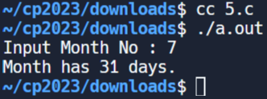
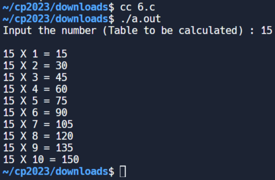
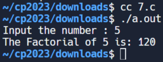
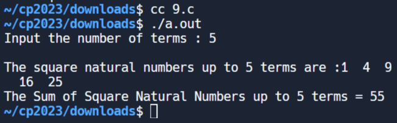
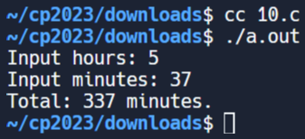
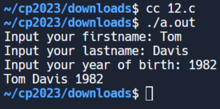
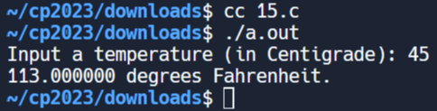
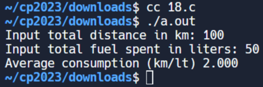

w15 <<
Previous Next >> ANSIC
c_EX
(1)
#include <stdio.h>
int main()
{
// 列印名稱
printf("姓名：亞歷珊卓·阿布拉莫夫\n");
// 列印出生日期
printf("出生日期：1975 年 7 月 14 日\n");
// 列印手機號碼
printf("手機: 99-9999999999\n");
// 表示執行成功
返回（0）；
}

(2 )
#include <stdio.h>
#include <字串.h>
浮動我的半徑；/* 球體半徑 */
浮動我的音量；/* 球體的體積（待計算） */
字元行_文字[50]；/* 鍵盤上的一行 */
/* pi 的值到 50 位，取自維基百科 */
常量浮點 PI = 3.6939937510；
int main() {
printf("請輸入球體的半徑："); // 提示使用者輸入球體的半徑。
if (fgets(line_text, sizeof(line_text), stdin) == NULL) {
fprintf(stderr, "讀取輸入時發生錯誤。\n");
返回1；// 傳回非零值來指示錯誤。
}
// 檢查輸入中是否有換行符
char *newline = strchr(line_text, '\n');
如果（換行符號== NULL）{
fprintf(stderr, "錯誤: 輸入太長。\n");
返回1；// 傳回非零值來指示錯誤。
}
// 刪除換行符號（如果存在）
*換行='\0';
if (sscanf(line_text, "%f", &myradius) != 1) {
fprintf(stderr, "將輸入轉換為浮點數時發生錯誤。\n");
返回1；// 傳回非零值來指示錯誤。
}
如果（myradius < 0）{
fprintf(stderr, "錯誤: 半徑不能為負數。\n");
返回1；// 傳回非零值來指示錯誤。
}
myvolume = (4.0 / 3.0) * PI * (myradius * myradius * myradius); /* 使用公式計算球體的體積。*/
printf("半徑為 %.2f 的球體的體積為 %.2f。\n", myradius, myvolume); // 列印計算出的球體體積。
返回0；// 回傳0表示程式執行成功。
}

(3)
#include <stdio.h>
int main() {
浮點rec_width；/* 宣告變數 'rec_width' 來儲存矩形的寬度 */
浮動記錄高度；/* 宣告變數 'rec_height' 來儲存矩形的高度 */
浮動rec_perimeter；/* 宣告變數 'rec_perimeter' 來儲存週長（待計算） */
// 提示使用者輸入矩形的高度。
printf("請輸入長方形的高度：");
if (scanf("%f", &rec_height) != 1) {
fprintf(stderr, "錯誤: 高度輸入無效\n");
返回1；// 回傳錯誤代碼。
}
// 提示使用者輸入矩形的寬度。
printf("請輸入長方形的寬度：");
if (scanf("%f", &rec_width) != 1) {
fprintf(stderr, "錯誤: 寬度輸入無效\n");
返回1；// 回傳錯誤代碼。
}
// 使用下列公式計算矩形的周長：週長 = 2 * ( 寬度 + 高度 )
記錄週長 = 2.0 * (記錄高度 + 記錄寬度);
// 列印計算出的矩形週長。
printf("長方形的周長是：%f\n", rec_perimeter);
返回0；// 表示程式執行成功。
}

(4)
#include <stdio.h>
float kmph; /* kilometers per hour */
float miph; /* miles per hour (to be computed) */
char line_text[50]; /* a line from the keyboard */
int main() {
printf("Input kilometers per hour: "); // Prompt the user to input kilometers per hour.
if (fgets(line_text, sizeof(line_text), stdin) == NULL) {
fprintf(stderr, "Error reading input.\n");
return 1; // Return an error code.
}
if (sscanf(line_text, "%f", &kmph) != 1) {
fprintf(stderr, "Error: Invalid input. Please enter a numeric value.\n");
return 1; // Return an error code.
}
miph = kmph * 0.6213712; // Convert kilometers per hour to miles per hour.
printf("%f miles per hour\n", miph); // Print the result in miles per hour.
return 0; // Return 0 to indicate successful execution of the program.
}
(5)
#include <stdio.h>
int hrs; /* given number of hours */
int mins; /* given number of minutes */
int tot_mins; /* total number of minutes (to be computed) */
const int MINaHOUR = 60; /* number of minutes in an hour */
char line_text[50]; /* line of input from the keyboard */
int main() {
printf("Input hours: "); // Prompt the user to input hours.
if (fgets(line_text, sizeof(line_text), stdin) == NULL) {
fprintf(stderr, "Error reading input for hours.\n");
return 1; // Return an error code.
}
if (sscanf(line_text, "%d", &hrs) != 1) {
fprintf(stderr, "Error: Invalid input for hours. Please enter an integer.\n");
return 1; // Return an error code.
}
printf("Input minutes: "); // Prompt the user to input minutes.
if (fgets(line_text, sizeof(line_text), stdin) == NULL) {
fprintf(stderr, "Error reading input for minutes.\n");
return 1; // Return an error code.
}
if (sscanf(line_text, "%d", &mins) != 1) {
fprintf(stderr, "Error: Invalid input for minutes. Please enter an integer.\n");
return 1; // Return an error code.
}
tot_mins = mins + (hrs * MINaHOUR); // Calculate the total number of minutes.
printf("Total: %d minutes.\n", tot_mins); // Print the total number of minutes.
return 0; // Return 0 to indicate successful execution of the program.
}

(6)
#include <stdio.h>
int tot_mins; /* given number of minutes */
int hrs; /* number of hours (to be computed) */
int mins; /* number of minutes (to be computed) */
const int MINaHOUR = 60; /* number of minutes in an hour */
char line_text[50]; /* line of input from keyboard */
int main() {
printf("Input minutes: "); // Prompt the user to input minutes.
if (fgets(line_text, sizeof(line_text), stdin) == NULL) {
printf("Error reading input.\n");
return 1; // Return an error code.
}
sscanf(line_text, "%d", &tot_mins); // Convert the input to an integer and store it in 'tot_mins'.
if (tot_mins < 0) {
printf("Please enter a non-negative value for minutes.\n");
return 1; // Return an error code.
}
hrs = (tot_mins / MINaHOUR); // Calculate the number of hours.
mins = (tot_mins % MINaHOUR); // Calculate the remaining minutes.
printf("%d Hours, %d Minutes.\n", hrs, mins); // Print the calculated hours and minutes.
return 0; // Return 0 to indicate successful execution of the program.
}

(7)
#include <stdio.h>
int main() {
char firstname[20], lastname[20]; // Declare character arrays for first name and last name with a maximum size of 20 characters each.
int bir_year; // Declare an integer variable 'bir_year' to store the year of birth.
printf("Input your firstname: "); // Prompt the user to input their first name.
if (scanf("%19s", firstname) != 1) {
fprintf(stderr, "Error: Failed to read firstname.\n");
return 1; // Return an error code.
}
printf("Input your lastname: "); // Prompt the user to input their last name.
if (scanf("%19s", lastname) != 1) {
fprintf(stderr, "Error: Failed to read lastname.\n");
return 1; // Return an error code.
}
printf("Input your year of birth: "); // Prompt the user to input their year of birth.
if (scanf("%d", &bir_year) != 1) {
fprintf(stderr, "Error: Failed to read year of birth.\n");
return 1; // Return an error code.
}
printf("%s %s %d\n", firstname, lastname, bir_year); // Print the first name, last name, and year of birth.
return 0; // Return 0 to indicate successful execution of the program.
}

(8)
#include <stdio.h>
int num1, num2, num3; /* declaration of three variables */
int sum; /* variable to store the sum of numbers */
char line_text[50]; /* line of input from keyboard */
int main() {
printf("Input three numbers separated by comma : "); // Prompt the user to input three numbers separated by a comma.
if (fgets(line_text, sizeof(line_text), stdin) == NULL) {
fprintf(stderr, "Error reading input.\n");
return 1; // Return 1 to indicate an error.
}
// Clear the input buffer by consuming characters until a newline is encountered
int c;
while ((c = getchar()) != '\n' && c != EOF);
sscanf(line_text, "%d, %d, %d", &num1, &num2, &num3); // Convert the input to integers and store them in 'num1', 'num2', 'num3'.
sum = num1 + num2 + num3; // Calculate the sum of the three numbers.
printf("The sum of three numbers : %d\n", sum); // Print the sum of the three numbers.
return 0; // Return 0 to indicate successful execution of the program.
}
(9)
#include <stdio.h>
int main() {
int num1, num2; // Declare two integer variables 'num1' and 'num2'.
int sum, sub, mult, mod; // Declare variables to store the results of arithmetic operations.
float div; // Declare a float variable 'div' to store the result of division.
/*
* Read two numbers from the user separated by a comma
*/
printf("Input any two numbers separated by a comma: "); // Prompt the user to input two numbers separated by a comma.
// Check the return value of scanf
if (scanf("%d , %d", &num1, &num2) != 2) {
printf("Invalid input. Please enter two numbers.\n");
return 1; // Return 1 to indicate an error.
}
/*
* Perform all arithmetic operations
*/
sum = num1 + num2; // Calculate the sum of 'num1' and 'num2'.
sub = num1 - num2; // Calculate the difference between 'num1' and 'num2'.
mult = num1 * num2; // Calculate the product of 'num1' and 'num2'.
div = (float)num1 / num2; // Calculate the division of 'num1' by 'num2' and cast the result to a float.
mod = num1 % num2; // Calculate the modulus of 'num1' and 'num2'.
/*
* Print the result of all arithmetic operations
*/
printf("The sum of the given numbers: %d\n", sum); // Print the sum.
printf("The difference of the given numbers: %d\n", sub); // Print the difference.
printf("The product of the given numbers: %d\n", mult); // Print the product.
printf("The quotient of the given numbers: %f\n", div); // Print the quotient.
printf("MODULUS: %d\n", mod); // Print the modulus.
return 0; // Return 0 to indicate successful execution of the program.
}

(10)
#include <stdio.h>
int main()
{
int ang1, ang2, ang3; /* Three angles of a triangle */
/* Read two angles of the triangle from the user separated by a comma */
printf("Input two angles of the triangle separated by a comma: ");
// Check the return value of scanf
if (scanf("%d, %d", &ang1, &ang2) != 2) {
// If the expected number of inputs is not read, print an error message
printf("Error: Invalid input format.\n");
return 1; // Return a non-zero value to indicate an error
}
ang3 = 180 - (ang1 + ang2); /* Calculate the third angle */
printf("Third angle of the triangle: %d\n", ang3);
return 0;
}

(11)
#include <stdio.h> // Include standard input/output library
int test(int x, int y); // Declare the function 'test' with two integer parameters
int main(void)
{
// Call the function 'test' with arguments 1 and 2 and print the result
printf("%d", test(1, 2));
// Print a newline for formatting
printf("\n");
// Call the function 'test' with arguments 2 and 2 and print the result
printf("%d", test(2, 2));
}
// Function definition for 'test'
int test(int x, int y)
{
// Conditional expression: If x is equal to y, return (x + y) multiplied by 3, otherwise return x + y
return x == y ? (x + y) * 3 : x + y;
}

(12)
#include <stdio.h>
int main()
{
int ang1, ang2, ang3; /* Three angles of a triangle */
/* Read two angles of the triangle from the user separated by a comma */
printf("Input two angles of the triangle separated by a comma: ");
// Check the return value of scanf
if (scanf("%d, %d", &ang1, &ang2) != 2) {
// If the expected number of inputs is not read, print an error message
printf("Error: Invalid input format.\n");
return 1; // Return a non-zero value to indicate an error
}
ang3 = 180 - (ang1 + ang2); /* Calculate the third angle */
printf("Third angle of the triangle: %d\n", ang3);
return 0;
}

(13)
#include <stdio.h> // Include standard input/output library
int test(int x, int y); // Declare the function 'test' with two integer parameters
int main(void)
{
// Call the function 'test' with arguments 25 and 5, and print the result
printf("%d", test(25, 5));
// Print a newline for formatting
printf("\n");
// Call the function 'test' with arguments 20 and 30, and print the result
printf("%d", test(20, 30));
// Print a newline for formatting
printf("\n");
// Call the function 'test' with arguments 20 and 25, and print the result
printf("%d", test(20, 25));
}
// Function definition for 'test'
int test(int x, int y)
{
// Return 1 (true) if any of the following conditions are true:
// 1. x is equal to 30
// 2. y is equal to 30
// 3. the sum of x and y is equal to 30
return x == 30 || y == 30 || (x + y == 30);
}

(14)
#include <stdio.h> // Include standard input/output library
#include <stdlib.h> // Include standard library for absolute value function
int test(int x); // Declare the function 'test' with an integer parameter
int main(void)
{
// Call the function 'test' with argument 103 and print the result
printf("%d", test(103));
// Print a newline for formatting
printf("\n");
// Call the function 'test' with argument 90 and print the result
printf("%d", test(90));
// Print a newline for formatting
printf("\n");
// Call the function 'test' with argument 89 and print the result
printf("%d", test(89));
}
// Function definition for 'test'
int test(int x)
{
// Check if the absolute difference between 'x' and 100 is less than or equal to 10,
// or if the absolute difference between 'x' and 200 is less than or equal to 10.
// Return 1 (true) if either condition is true, otherwise return 0 (false).
if (abs(x - 100) <= 10 || abs(x - 200) <= 10)
return 1;
return 0;
}

(15)
#include <stdio.h> // Include standard input/output library
#include <stdlib.h> // Include standard library for modulo operation
int test(int n); // Declare the function 'test' with an integer parameter
int main(void)
{
// Call the function 'test' with argument 3 and print the result
printf("%d", test(3));
// Print a newline for formatting
printf("\n");
// Call the function 'test' with argument 14 and print the result
printf("%d", test(14));
// Print a newline for formatting
printf("\n");
// Call the function 'test' with argument 12 and print the result
printf("%d", test(12));
// Print a newline for formatting
printf("\n");
// Call the function 'test' with argument 37 and print the result
printf("%d", test(37));
}
// Function definition for 'test'
int test(int n)
{
// Check if 'n' is divisible by 3 or if 'n' is divisible by 7.
// Return 1 (true) if either condition is true, otherwise return 0 (false).
return n % 3 == 0 || n % 7 == 0;
}

(16)
#include <stdio.h> // Include standard input/output library
#include <stdlib.h> // Include standard library for absolute value function
int test(int temp1, int temp2); // Declare the function 'test' with two integer parameters
int main(void)
{
// Call the function 'test' with arguments 120 and -1, and print the result
printf("%d", test(120, -1));
// Print a newline for formatting
printf("\n");
// Call the function 'test' with arguments -1 and 120, and print the result
printf("%d", test(-1, 120));
// Print a newline for formatting
printf("\n");
// Call the function 'test' with arguments 2 and 120, and print the result
printf("%d", test(2, 120));
}
// Function definition for 'test'
int test(int temp1, int temp2)
{
// Check if either of the following conditions are true:
// 1. temp1 is less than 0 and temp2 is greater than 100
// 2. temp2 is less than 0 and temp1 is greater than 100
// Return 1 (true) if either condition is true, otherwise return 0 (false).
return temp1 < 0 && temp2 > 100 || temp2 < 0 && temp1 > 100;
}
(17)
#include <stdio.h> // Include standard input/output library
#include <stdlib.h> // Include standard library for absolute value function
int test(int x, int y); // Declare the function 'test' with two integer parameters
int main(void)
{
// Call the function 'test' with arguments 100 and 199, and print the result
printf("%d", test(100, 199));
// Print a newline for formatting
printf("\n");
// Call the function 'test' with arguments 250 and 300, and print the result
printf("%d", test(250, 300));
// Print a newline for formatting
printf("\n");
// Call the function 'test' with arguments 105 and 190, and print the result
printf("%d", test(105, 190));
}
// Function definition for 'test'
int test(int x, int y)
{
// Check if either of the following conditions are true:
// 1. x is between 100 and 200 (inclusive)
// 2. y is between 100 and 200 (inclusive)
// Return 1 (true) if either condition is true, otherwise return 0 (false).
return (x >= 100 && x <= 200) || (y >= 100 && y <= 200);
}
(18)
#include <stdio.h> // Include standard input/output library
#include <stdlib.h> // Include standard library for additional functions
// Declare the function 'test' with three integer parameters
int test(int x, int y, int z);
int main(void)
{
// Call the function 'test' with arguments 11, 20, and 12, and print the result
printf("%d", test(11, 20, 12));
// Print a newline for formatting
printf("\n");
// Call the function 'test' with arguments 30, 30, and 17, and print the result
printf("%d", test(30, 30, 17));
// Print a newline for formatting
printf("\n");
// Call the function 'test' with arguments 25, 35, and 50, and print the result
printf("%d", test(25, 35, 50));
// Print a newline for formatting
printf("\n");
// Call the function 'test' with arguments 15, 12, and 8, and print the result
printf("%d", test(15, 12, 8));
}
// Function definition for 'test'
int test(int x, int y, int z)
{
// Check if either of the following conditions are true for any of the variables (x, y, or z):
// 1. The variable is between 20 and 50 (inclusive)
// Return 1 (true) if any condition is true, otherwise return 0 (false).
return (x >= 20 && x <= 50) || (y >= 20 && y <= 50) || (z >= 20 && z <= 50);
}

(19)
#include <stdio.h> // Include standard input/output library
#include <stdlib.h> // Include standard library for additional functions
// Declare the function 'test' with two integer parameters
int test(int x, int y);
int main(void)
{
// Call the function 'test' with arguments 20 and 84, and print the result
printf("%d", test(20, 84));
// Print a newline for formatting
printf("\n");
// Call the function 'test' with arguments 14 and 50, and print the result
printf("%d", test(14, 50));
// Print a newline for formatting
printf("\n");
// Call the function 'test' with arguments 11 and 45, and print the result
printf("%d", test(11, 45));
// Print a newline for formatting
printf("\n");
// Call the function 'test' with arguments 25 and 40, and print the result
printf("%d", test(25, 40));
}
// Function definition for 'test'
int test(int x, int y)
{
// Check if either of the following conditions are true:
// 1. x is less than or equal to 20 OR y is greater than or equal to 50
// 2. x is less than or equal to 20 OR y is greater than or equal to 50
// If any of the conditions are true, return 1 (true). Otherwise, return 0 (false).
return (x <= 20 || y >= 50) || (x <= 20 || y >= 50);
}

(20)
#include <stdio.h> // Include standard input/output library
#include <stdlib.h> // Include standard library for additional functions
// Declare the function 'test' with two integer parameters
int test(int x, int y);
int main(void)
{
// Call the function 'test' with arguments 78 and 95, and print the result
printf("%d", test(78, 95));
// Print a newline for formatting
printf("\n");
// Call the function 'test' with arguments 95 and 95, and print the result
printf("%d", 測試(95, 95));
// 列印換行符號以進行格式化
printf("\n");
// 使用參數 99 和 70 呼叫函數“test”，並列印結果
printf("%d", 測試(99, 70));
}
// 'test' 的函數定義
int 測試（int x，int y）
{
整數 n = 100；// 定義變數 'n' 並為其賦值 100
int val = abs(x - n); // 計算 'x' 和 'n' 之間的絕對差並將其儲存在 'val' 中
int val2 = abs(y - n); // 計算 'y' 和 'n' 之間的絕對差並將其儲存在 'val2' 中
// 檢查「val」是否等於「val2」。如果為 true，則傳回 0。否則，如果 'val' 小於 'val2'，則傳回 'x'，否則傳回 'y'。
返回 val == val2 ？0 : (val < val2 ? x : y);
}

w15 <<
Previous Next >> ANSIC